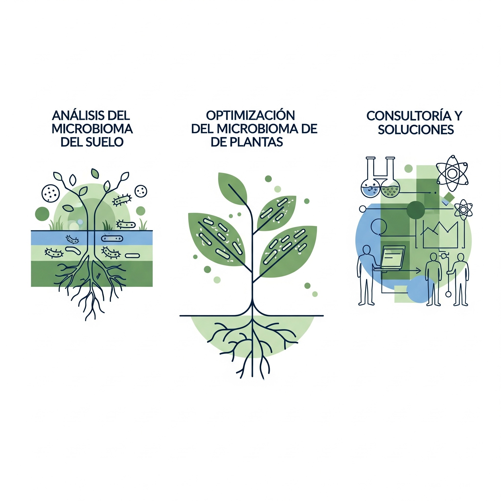

Nuestra Oferta de Servicios
En BioInCode, transformamos la complejidad del mundo microbiano en conocimiento práctico. Nuestros servicios se centran en el análisis avanzado y la consultoría, proporcionando información crucial para la toma de decisiones estratégicas en su explotación agrícola.

Precisión Biológica para su Cultivo y Productos
Diagnóstico Integral del Microbioma de Suelos y Plantas
- Análisis Metabarcoding (ADN/ARN): Identificación de la diversidad y composición microbiana (bacterias, hongos, protistas) en suelos, raíces y hojas, revelando interacciones beneficiosas o perjudiciales.
- Cuantificación de Patógenos Específicos: Detección precisa de patógenos fúngicos, bacterianos y virales relevantes para el cultivo, permitiendo intervenciones tempranas y dirigidas.
- Evaluación de la Salud del Suelo: Medición de indicadores microbiológicos clave (índices de diversidad, biomasa microbiana, actividad enzimática) para evaluar la resiliencia y fertilidad del suelo.
- Perfiles de Resistencia a Antibióticos: Identificación de genes de resistencia a antibióticos en el microbioma, crucial para la seguridad alimentaria y ambiental.
- Análisis de la Microbiota de Insumos Biológicos: Caracterización microbiológica de biofertilizantes, biopesticidas y otros productos biológicos para asegurar su calidad y eficacia.
Control de Calidad Microbiológico
- Monitorización de Cultivos: Seguimiento de la evolución del microbioma en diferentes etapas del ciclo del cultivo o en respuesta a tratamientos.
- Análisis de Aguas de Riego y Residuos: Evaluación de la calidad microbiológica del agua utilizada en riego y del impacto microbiano de residuos orgánicos en el suelo.
- Control de Calidad de Productos Agrícolas: Análisis microbiológico de productos cosechados para garantizar su inocuidad y vida útil post-cosecha.
- Validación de Tratamientos: Evaluación de la efectividad de tratamientos biológicos o químicos en la modificación del microbioma o el control de patógenos.
Consultoría y Desarrollo de Estrategias
- Asesoramiento Personalizado: Interpretación de los resultados de análisis para ofrecer recomendaciones prácticas y adaptadas a las necesidades específicas de cada explotación.
- Optimización de Programas de Fertilidad y Sanidad: Desarrollo de estrategias basadas en el microbioma para mejorar la absorción de nutrientes, la resistencia a enfermedades y el rendimiento del cultivo.
- Innovación y Desarrollo de Bioproductos: Colaboración en la formulación y validación de nuevos biofertilizantes, biopesticidas y otros insumos biológicos.
- Formación y Capacitación: Talleres y seminarios para agricultores y técnicos sobre la importancia del microbioma y cómo integrar los análisis en la gestión agrícola.